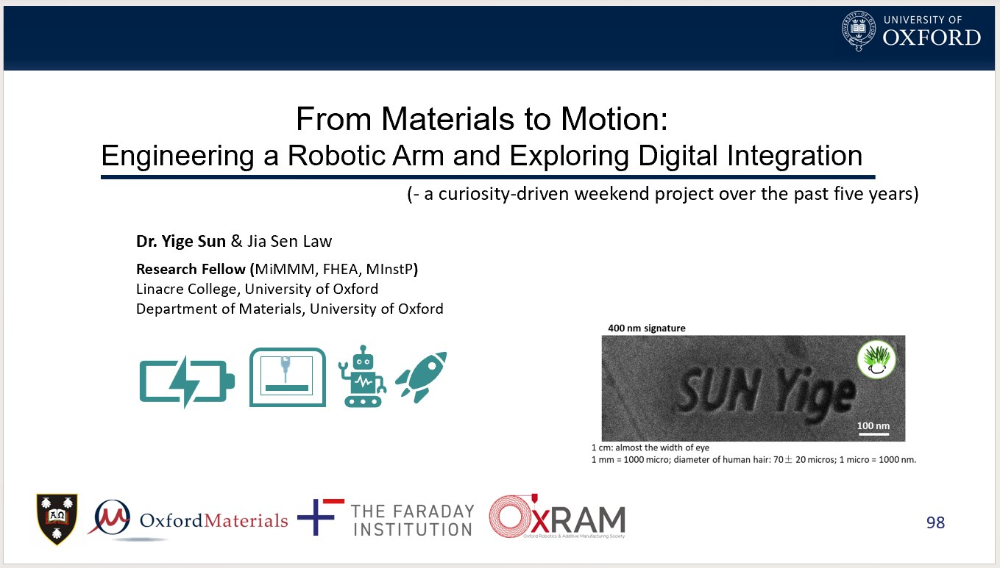
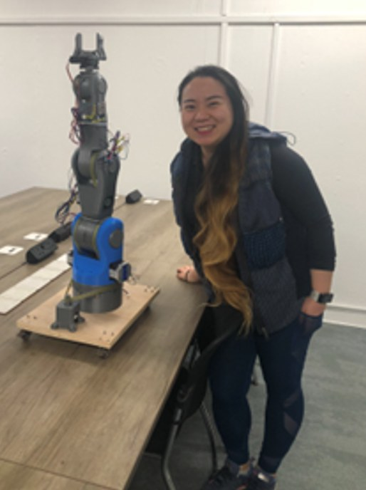

Dr Yige Sun (FHEA)
Batteries that can be measured, automated and recovered from electrode to end of life, with space as the most demanding validation setting.
Research Fellow of Linacre College, University of Oxford, and Faraday Institution Research Fellow in the Department of Materials. Fellow of the Higher Education Academy and departmental Mental Health First Aider.
Explore the research lineProjectsGoogle Scholar
At a glance
peer-reviewed journal articles, h-index 16, with an Editor's Choice paper cited more than 200 times.
granted patents, four held and licensed by Murata Manufacturing; one further patent in filing.
participants from 25 organisations in 5 countries at the Circular Batteries in Space workshop, June 2026.
years in energy storage, from electrode materials in Japan to manufacturing, imaging and robotics at Oxford.
Firsts
First operational PFIB-SIMS-EDX workflow in Oxford for three-dimensional lithium mapping, degradation studies and inert transfer.
First in Oxford's Department of Materials to build a robotic arm from scratch, taking materials research from materials to motion.
First consortium in the UK on circular space batteries, bringing together operators, agencies, universities and industry from five countries.
Awards and recognition
- 2026ESA Space for Inspiration Academic Challenges, shortlisted as one of the top three, track on advanced materials and in-space manufacturing
- 2026UKSA NSIP Call 3 proposal as principal investigator, shortlisted as one of three Oxford submissions
- 2025Royal Society University Research Fellowship, shortlisted; EPSRC Open Fellowship, invited to Stage 2
- 2025Nominated, Public and Community Engagement with Research Scheme, University of Oxford
- 2018International Students Research Award, NIMS
- 2017Nanoscale paper in the Editor's Choice collection, with more than 200 citations
- 2015Best Presentation Award, Nanotechnology Students' Summer School, University of Adelaide
- 2013Fund for Outstanding Master Thesis, Tsinghua University
- 2012Excellence in Student Leadership, Tsinghua University
- 2011Integrated First-Class Scholarship, Tsinghua University
- 2007 to 2009First Class Awards and Outstanding Graduates Award, Xi'an University of Technology
From electrode to end of life
The research line extends net zero from Earth to space through safe and sustainable design of materials and systems (EU SSbD framework), with dual use for electric vehicles and aviation.
Select a step to see what has been done and with whom.
1 Measure: see what is inside
Done
- Oxford's first operational PFIB-SIMS-EDX workflow: quantified three-dimensional lithium maps in electrodes, now transferable to solid-state cells; 11 publications and 6 oral presentations.
- Correlative imaging and spectroscopy: SEM-EDX, low-voltage and hyperspectral SEM, Raman, FTIR, XPS, XRD (including glovebox XRD), collaborative X-ray CT.
- Micron 190 (2025) 103746; Nanoscale 9 (2017) 2585, Editor's Choice with more than 200 citations.
Collaborators
- Prof Patrick Grant FREng (Oxford Materials, co-author of the PFIB-SIMS-EDX papers)
- Prof Paul Shearing FREng (X-ray CT and Doyle-Fuller-Newman modelling)
- NPL: NPL Measurement for Business submission on low-temperature sample transfer to Raman submitted
2 Make: manufacture consistently and share the protocol
Done
- Electrode manufacturing research: slurry formulation, multilayer and bilayer coatings, drying effects, phase-inversion electrodes; 3D-printed structural electrodes by wax templating.
- NEXTRODE Phase 1 coordinator: aligned five institutions on one electrode and pouch-cell SOP; designed the shared data template, wrote the recording SOP and merged the partners' data.
- Hands-on cell assembly and testing: Li-ion, Na-ion, solid-state, Li-ion capacitors; 400°C PEEK extrusion and 3D printing.
- Selected papers: J. Mater. Chem. A 10 (2022) 10593 (drying); J. Colloid Interface Sci. 655 (2024) 518 (multilayer electrodes).
Planned
- Circular polymer filaments (PEEK/CNF, PVDF) for 3D printing: originated and leading the Royce Industrial Collaboration Programme Round 7 application in preparation
Collaborators
- Faraday Institution and the NEXTRODE partner institutions; Prof Patrick Grant FREng
- University of Glasgow NextSpace TestRig (polymer filaments)
- EPSRC Enabling Next-Generation Li-ion Batteries
3 Automate: close the loop with data and robots
Done
- A six-degree-of-freedom robotic arm built from scratch with OxRAM: mechanics, actuation, ROS-based control, open-access code and ROS lectures.
- SEM Parameter Optimiser and a failure-aware LLM workflow for instrument data; Python for image recognition, 3D-printer control and data processing; MATLAB, CAD and Blender.
- Main contributor to Oxford's GBP 6.4M automation lab bid and to the Oxford Materials DSIT Sovereign AI Autonomous Labs proposal, with Prof Jason Smith and Prof Paul Shearing FREng; discussions with NPL on its automation lab.
- Only battery specialist at the ARIA Robot Locomotion workshop (30 June to 1 July 2026).
- Lead of the OxRAM student robotics team since 2020: six robotics projects, open-access code and training resources. The initiative led to a spin-out company, Oxford Robotics and Additive Manufacturing Group Ltd, which I founded.
- A student I mentored delivered six ROS lectures and went on to a robotics DPhil at Oxford; four participants progressed to robotics MSc or PhD programmes in the United States, the United Kingdom and Switzerland.


Collaborators
- Prof Jason Smith and Prof Paul Shearing FREng (Oxford Materials)
- OxRAM society; Manufacturing Technology Centre (robotic battery tear-down)
- NPL
4 Recover and reuse: from end of life back to manufacturing
Done
- First consortium in the UK on circular space batteries: inaugural workshop, 22 June 2026, Oxford, with 38 participants from 25 organisations in 5 countries; concept paper and policy briefing.
- Longitude Prize workshop on space batteries, 12 November 2026: the Longitude Prize team (Nesta and Challenge Works) is exploring the concept as a potential national prize challenge.
- Space Metals: recovery and refining of metals from decommissioned spacecraft; ESA Space for Inspiration 2026, shortlisted as one of the top three; patent application in filing.
- Policy and technical reports: Technical Considerations for Serviceable Spacecraft (Satellite Applications Catapult, 2025, energy-systems section); Unlocking the Potential of Metamaterials (IMechE, 2025).
- Market validation interviews, December 2026 to March 2027.
Collaborators
- Prof Martin Freer, Satellite Applications Catapult, Henry Royce Institute, Faraday Institution, OPEN
- Industry: Altilium, D-Orbit, ClearSpace, Astroscale
- In discussion: University of Luxembourg, ESA contacts, Space Applications Services (ICE Cubes) in discussion
Space and extreme environments: the most demanding validation setting
The same four steps are tested where conditions are hardest. Measurement at low temperature and without air exposure, robotic handling in microgravity and recovery that does not depend on gravity apply to batteries on Earth as well.
- UKSA NSIP Call 3 proposal as principal investigator (GBP 1.0M, AI-Driven Designing for Disassembly), shortlisted as one of three Oxford submissions; outcome pending.
- Low-temperature sample transfer to Raman (NPL Measurement for Business, submitted); inert transfer workflows in Oxford.
- Staged route to microgravity samples under discussion: drop-tower style free fall, longer microgravity, then the ISS in discussion
- NASA Aerospace Battery Workshop (2024); ESA Strategy Forum on Space-Based Data Centres (2026); European Commission JRC and European Parliament High-Level Conference on Raw Materials (2026).
Collaborators and partnerships
Established
- Oxford: Prof Patrick Grant FREng, Prof Paul Shearing FREng, Prof Jason Smith, OxRAM society
- Programmes and agencies: Faraday Institution, Henry Royce Institute, Satellite Applications Catapult, NPL, OPEN, Linacre College
- Industry: Altilium, D-Orbit, ClearSpace, Astroscale
- Japan: NIMS (four years of research), Murata Manufacturing (licensed patents), invited talks at NIMS and AIST
In discussion or planned
- University of Luxembourg; ESA; Space Applications Services (ICE Cubes); University of Glasgow NextSpace TestRig
- Nesta and Challenge Works (Longitude Prize)
Contact
yige.sun@materials.ox.ac.uk
Research Fellow, Linacre College, University of Oxford · Department of Materials, University of Oxford (Begbroke Science Park)